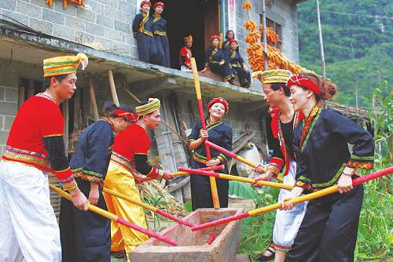

风情马山

马山县位于广西中部，地处红水河中段南岸，大明山北麓。骆越长寿之乡。东与上林县、忻城县交界，西与大化县、平果县接壤，南与武鸣县相邻，北隔红水河与都安瑶族自治县相望，是广西壮族自治区首府南宁市辖县。全县现辖7个镇4个乡，145个村，6个社区，总人口51万人，有壮、汉、瑶等9个民族，总面积2363平方公里，是典型的大石山区，经济基础较为薄弱，2002年被国务院确定为全国新阶段扶贫开发工作重点县。
全县居住有壮、汉、瑶、苗等11个民族同胞，以壮族人口居多。其中，壮、汉、瑶三个主要民族为世居民族，他们各有自己的语言，本族人交谈以母语为主。但因周围壮族人口占绝大多数，故汉族、瑶族中多数成年人亦会壮语，族际间以壮语或汉语西南官话作为交际工具。公众集会或政府出面举办的各种重大活动，多用西南官话。文字以汉字为最通用。部分壮族人也通晓自己的民族文字。境内语言有壮语、西南官话、平话、客家语(新民话)等。